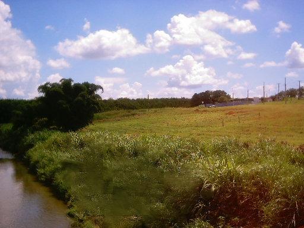
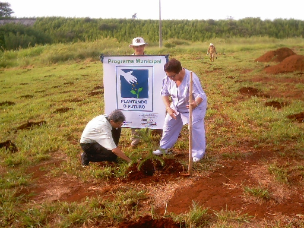
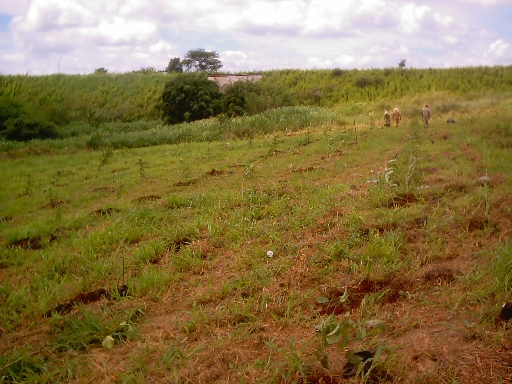
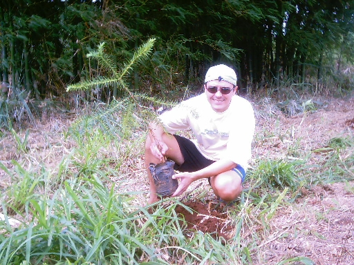
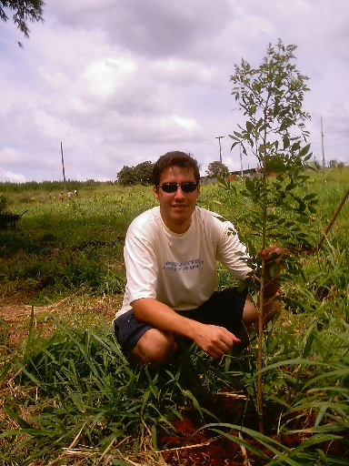
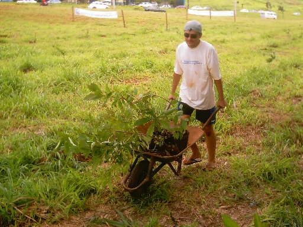
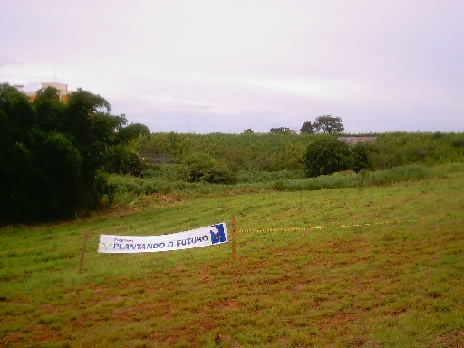

|
FELIZ
2005!!!
Mais
um ano se inicia e o Projeto Plante a Vida recebe o convite
para um plantio inusitado e de grandes proporções!
Fomos
convidados por Paulo José Penalva Mancini,
da
Secretaria Municipal de Desenvolvimento Sustentável, Ciência e
Tecnologia
da Prefeitura Municipal de São Carlos, a fazer parte de um plantio
que foi realizado
junto às margens do Córrego Monjolinho, no Parque Faber,
em frente à Alameda
das Quaresmeiras,
próximo à Rotatória do Cristo Redentor.
Foram plantadas 800 espécies de árvores nativas,
incluindo 100 mudas da árvore símbolo da cidade, a Araucária.
Ficamos
muito felizes com o convite e, principalmente, com o resultado do plantio!
Veja
as fotos do plantio:
|
 |
|
A
foto tirada no dia anterior mostra o local do plantio. |
|
 |
|
Paulo
Mancini, à esquerda, planta uma das primeiras árvores: uma
Araucária. |
|
 |
|
Uma
média de 10 pessoas ajudam no plantio,
tornando-o demorado e cansativo.
|
|  |
|
Quase
no fim do plantio, Alexandre planta uma muda de Araucária. |
|  |
| Danilo,
ao lado de uma muda de Santa Bárbara. |
|  |
Neste
plantio, devido a grande quantidade de mudas a serem plantadas,
utilizamos uma carriola para facilitar no transporte. |
|  |
Por
fim, após aproximadamente 7 horas de plantio, as 800 mudas
tomaram
conta do local que antes era um grande matagal. |
Abaixo
está o convite feito por Paulo Mancini
aos colaboradores que participaram do plantio:
Caros Colegas do COMDEMA SC
e demais amigas e amigos
É com satisfação que enviamos em anexo
convite para participarem do Primeiro Ato Administrativo da nova
gestão do Prefeito Newton Lima Neto, que dar-se-á no dia
03 de janeiro de 2005, às 8h:00, junto às margens do Córrego Monjolinho, no Parque Faber, em frente à
Alameda das Quaresmeiras, próximo à Rotatória do Cristo
Redentor.
Nesta ocasião estaremos plantando 800 mudas de árvores
nativas, sendo 100 araucárias. No primeiro dia da gestão que está
findando, o Prefeito Newton plantou uma araucária no 1º Jardim Público
de São Carlos.
No inicio da nova gestão deveremos estar plantando 800 árvores
nativas no Córrego que banha nossa cidade, dando inicio a
recomposição da vegetação ciliar que formará uma exuberante
massa verde até a Estação de Tratamento de Esgotos que deverá
estar concluída em dois anos, redimindo (das nossas impurezas) as
águas do nosso Monjolinho, permitindo que as luzes que a histórica
Usina Hidroelétrica do Monjolinho iluminava, voltem a ser acesas,
fazendo bater mais forte os corações daqueles que amam São
Carlos e sua natureza.
A Prefeitura deverá receber em doação 50.000
mudas de árvores da Fundação SOS
Mata Atlântica, através de seu programa "Click
Árvore". As primeiras 800 delas estaremos plantando no
dia 03 de janeiro de 2005.
Estaremos contando para este plantio com a
colaboração da Tapetes São Carlos S/A, que disponibilizou um
trator com um trado para fazermos as covas no local, e com a
colaboração da Engefort, que estará ajudando a cuidar da
manutenção da área após o plantio.
Contamos com a sua participação. Vai ter árvores
para todos ajudarem. Venha por a mão na terra. Vamos iniciar o ano
plantando Vida em nossa cidade.
Feliz Natal e um Próspero Ano Novo! (e as árvores trazem
prosperidade)
Paulo José Penalva Mancini
Departamento de Política Ambiental
Secretaria Municipal de Desenvolvimento Sustentável, Ciência e
Tecnologia
Prefeitura Municipal de São Carlos
Rua General Osório, 1138 Centro CEP: 13560-640
Tel: (55 16) 3371-7238 |
Esperamos
com grande expectativa que a Prefeitura Municipal de São Carlos
realmente plante as 50.000 mudas que lhes foram doadas!
Enquanto
isto não acontece, continuamos com nosso trabalho de
"formiguinhas",
plantando quantas árvores pudermos!
Se
você deseja plantar árvores em sua rua, entre em contato conosco!
Seja
um de nossos parceiros e Plante a Vida!
|